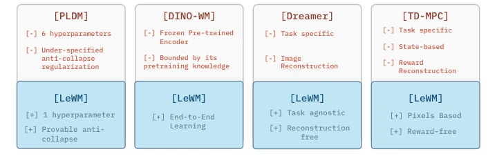
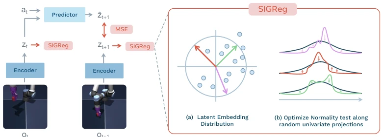
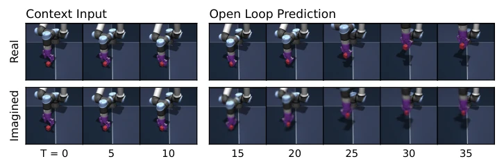
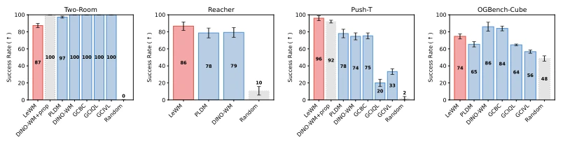
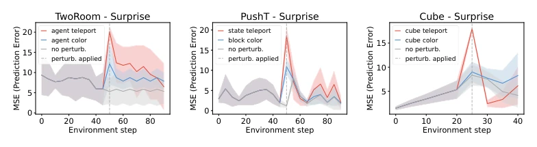
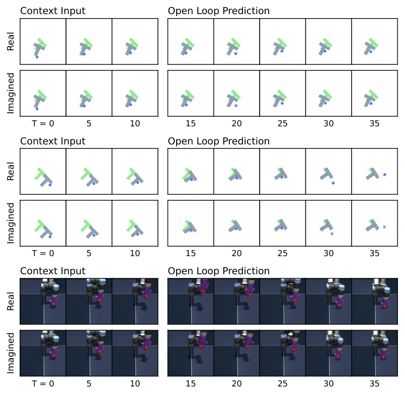
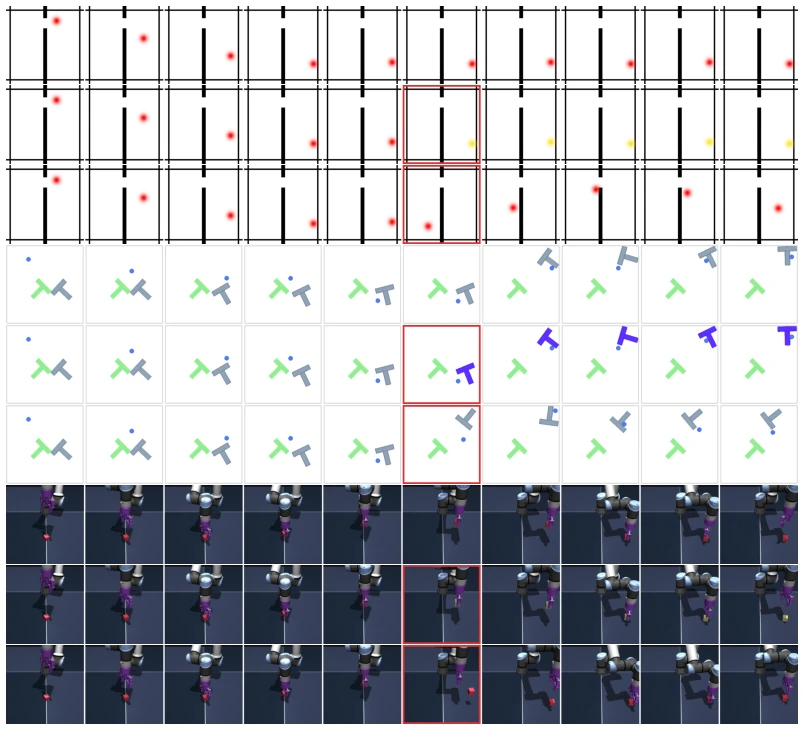
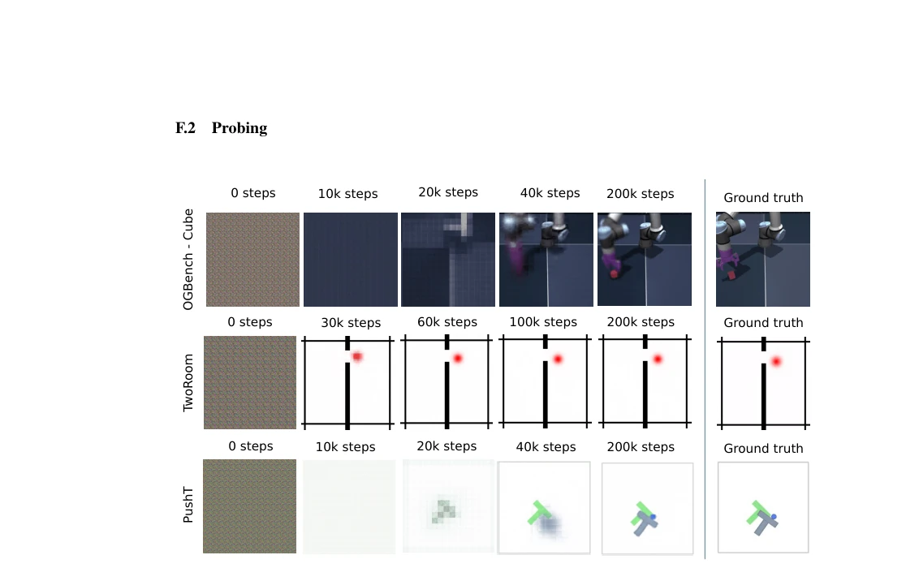
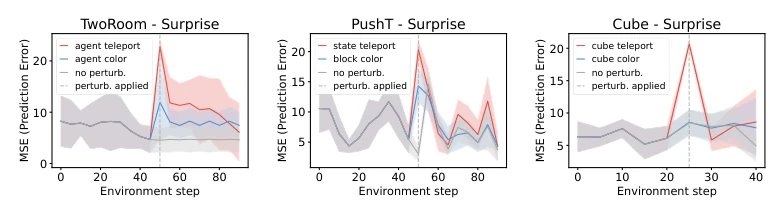
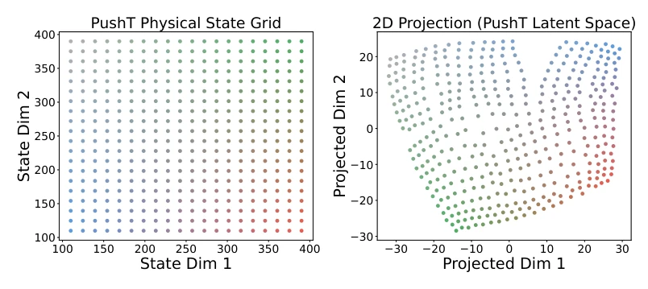

LeWorldModel: Stable End-to-End Joint-Embedding Predictive Architecture from Pixels
Lucas Maes, Quentin Le Lidec, Damien Scieur, Yann LeCun, Randall Balestriero abspdf
论文点评Review
乐此不疲地折腾 JEPA 架构，LeCun 团队这次终于把“防坍塌”这题做稳了。LeWorldModel 号称端到端像素训练，不用 EMA 也不用预训练编码器，全靠一个 SIGReg 正则项硬控高斯分布。虽然 15M 参数跑得快，规划速度吊打 DINO-WM，但在简单环境（Two-Room）里反而不如基线，看来强行高斯化在低维空间有点水土不服。这模型物理直觉不错，能识别“瞬移”这种物理错误，但 3D 复杂场景下还是略逊于带 proprioception 的 DINO-WM。总的来说，是个工程上很干净的尝试，但别指望它能解决所有物理难题，尤其是当环境太简单导致高斯先验失效时。唯一可调超参数只剩一个，调参党狂喜，但模型在低维任务上的表现提醒我们，正则化并非万能药，过度追求分布匹配可能牺牲任务特异性。
Tinkering tirelessly with the JEPA architecture, the LeCun team has finally stabilized the problem of 'preventing collapse' this time. LeWorldModel claims end-to-end pixel training, using neither EMA nor pre-trained encoders, relying entirely on a SIGReg regularization term to strictly enforce the Gaussian distribution. Although the 15M parameters run fast and planning speed beats DINO-WM, it performs worse than the baseline in simple environments (Two-Room), suggesting that forced Gaussianization is somewhat out of place in low-dimensional spaces. This model has good physical intuition and can identify physical errors like 'teleportation', but in 3D complex scenes it is still slightly inferior to DINO-WM with proprioception. Overall, it is a very clean engineering attempt, but do not expect it to solve all physical problems, especially when the environment is too simple causing the Gaussian prior to fail. There is only one tunable hyperparameter left, which makes hyperparameter tuning enthusiasts ecstatic, but the model's performance on low-dimensional tasks reminds us that regularization is not a panacea, and excessive pursuit of distribution matching may sacrifice task specificity.
The core of world models is predicting the future; the JEPA architecture [5] avoids the redundancy of pixel reconstruction through latent space prediction, but training is prone to collapse. Existing end-to-end methods like PLDM [21] rely on multi-objective losses, creating a hyperparameter tuning hell that is unstable; foundation model-based methods like DINO-WM [18] are stable but freeze the encoder, preventing end-to-end optimization. Furthermore, many methods rely on reward signals [4] or pre-trained features, limiting generalization. EMA and stop-gradient lack explicit optimization objectives [17]. We need a JEPA architecture that requires no heuristic tricks, no pre-training, and can stably prevent representation collapse to truly learn a general world model from raw pixels.

Figure 2: Characteristics of latent world model approaches. Methods are grouped by training paradigm. End- to-end methods (PLDM) learn the encoder and predictor jointly from pixels without pre-trained representations or heuristics like stop-gradient or EMAs, but require many hyperparameters and lack collapse guarantees. Foundation-based methods (DINO-WM) avoid collapse by freezing a pre-trained vision encoder, forgoing end-to-end learning. Task-specific methods (Dreamer, TD-MPC) require reward signals or privileged state access. LeWM combines the strengths of all three: end-to-end, task-agnostic, pixel-based, reconstruction- and reward-free, with a single hyperparameter with provable anti-collapse guarantees.
方法Method
整体流程分为离线训练与在线规划。训练阶段，ViT 编码器将像素帧映射为隐状态 z，Transformer 预测器根据当前 z 和动作 a 预测下一时刻 z。核心创新在于损失函数：仅包含预测误差（MSE）和 SIGReg 正则项。SIGReg 通过随机投影将高维隐向量映射到一维，利用 Epps-Pulley 统计量检验正态性，强制隐空间分布接近各向同性高斯，从理论上保证防坍塌。规划阶段，采用模型预测控制（MPC），在隐空间内通过交叉熵方法（CEM）优化动作序列以匹配目标隐状态，仅执行首步动作并重规划。
The overall process is divided into offline training and online planning. In the training phase, the ViT encoder maps pixel frames to latent states z, and the Transformer predictor predicts the next moment z based on the current z and action a. The core innovation lies in the loss function: it contains only prediction error (MSE) and the SIGReg regularization term. SIGReg maps high-dimensional latent vectors to one dimension through random projection, uses the Epps-Pulley statistic to test normality, forces the latent space distribution to approach isotropic Gaussian, and theoretically guarantees prevention of collapse. In the planning phase, Model Predictive Control (MPC) is adopted, optimizing action sequences via Cross-Entropy Method (CEM) within the latent space to match target latent states, executing only the first step action and replanning.

Figure 1: LeWorldModel Training Pipeline. Given frame observations o1:T and actions a1:T , the encoder maps frames into low-dimensional latent representations z1:T . The predictor models the environment dynamics by autoregressively predicting the next latent state zt+1 from the current latent state zt and action at. The encoder and predictor are jointly optimized using a mean-squared error (MSE) prediction loss. LeWM does not rely on any training heuristics, such as stop-gradient, exponential moving averages, or pre-trained representations. To prevent trivial collapse, the SIGReg regularization term enforces Gaussian-distributed latent embeddings, promoting feature diversity. For tractability, latent embeddings are projected onto multiple random directions, and a normality test is applied

Figure 7: Predictor rollout on OGBench-Cube. We visualize decoded latent plans from LeWM given context and action sequences. Each rollout encodes three image observations as context, then autoregressively generates future latents conditioned on the actions in an open-loop fashion. Latents are decoded via a decoder trained a posteriori. The imagined rollout suggests that latent representations capture the global scene structure while finer details like end-effector angle are not fully preserved. Additional rollouts for Push-T and OGBench-Cube are provided in Fig. 9.
Evaluated on 2D/3D tasks such as PushT, Reacher, OGBench-Cube. Baselines include PLDM [21], DINO-WM [18], and offline RL methods. Metrics cover success rate, planning time, and physical understanding capability. Results show LeWM planning speed is 48 times faster than DINO-WM, and success rate surpasses PLDM on tasks like PushT. Physical probing indicates the latent space can recover object positions and angles, and Violation of Expectation (VoE) shows the model is sensitive to physical anomalies (such as 'teleportation'). Ablation experiments confirm SIGReg parameters are robust, but performance drops in low-dimensional environments (Two-Room) due to Gaussian prior mismatch.

Figure 6: Planning performance across environments. Results are shown for Two-Room (left), Reacher (center 1), PushT (center-2) and OGBench-Cube (right). LeWM consistently outperforms PLDM and DINO-WM on Push-T and Reacher. On OGBench-Cube, DINO-WM slightly outperforms LeWM, possibly due to the higher visual complexity and the 3D nature of the environment, which makes encoder training more challenging. In the simpler Two-Room environment, PLDM and DINO-WM outperform LeWM, which may be explained by the SIGReg regularization encouraging a Gaussian distribution in a high-dimensional latent space, while the intrinsic dimensionality of the environment is much lower.

Figure 8: Violation-of-expectation evaluation across three environments. Each plot shows LeWM surprise along three trajectories: an unperturbed reference, a visually perturbed trajectory with abrupt object color change, and a physically perturbed trajectory where objects teleport to random positions. Teleportation violates physical continuity and produces a pronounced surprise spike, while the unperturbed trajectory stays at a low baseline. The increase is significant for teleportation across all environments (paired t-test, p < 0.01) but weaker and non-significant for color changes, indicating greater sensitivity to physical than visual perturbations. Environments, left to right: TwoRoom, PushT, OGBench Cube.

Figure 9: Additional predictor rollouts on PushT (top) and OGBench-Cube (bottom). Same setup as Fig. 7: three context frames are encoded into latent representations, and the predictor autoregressively generates future latent states conditioned on the action sequence. All predictions are decoded using a decoder not used during training. On PushT, the imagined trajectory closely tracks the real one, accurately capturing both agent and block motion. On OGBench-Cube, the model preserves the overall scene layout and cube displacement but loses finer details such as end-effector orientation at longer horizons, consistent with the lower probing accuracy on rotational quantities reported in Tab. 4.

Figure 11: Example of trajectories used for the Violation of Expectation experiments (Sec. 5.2). For each environment, the first row corresponds to the unperturbed trajectory, the second row corresponds to a trajectory where a visual perturbation occurs and the third row displays trajectories where the state of the system is randomly reset in the middle of the trajectory. The frame where the perturbation occurs is highlighted in red.
其他图片Other Figures

Figure 10: Decoder visualization during training. As training progresses, the latent representation increas- ingly captures the information required to reconstruct the visual scene, even though no reconstruction loss is used during training. Early in training, the decoded images correspond to slow features, a phenomenon previously reported [21].

Figure 12: Violation-of-expectation evaluation with PLDM. From left to right: TwoRoom, PushT, and OGBench-Cube. Surprise is plotted over time for unperturbed, visually perturbed, and physically perturbed trajectories. In TwoRoom and PushT, the model assigns significantly higher surprise to both visual and physical perturbations. In OGBench-Cube, the increase in surprise is weaker and not consistently significant.

Figure 13: Visualization of the latent space obtained with LeWM for the PushT environment. On the left, the grid of states is obtained by moving the agent and the block in the x-y plane. On the right, the embeddings of these states are visualized using a t-SNE.